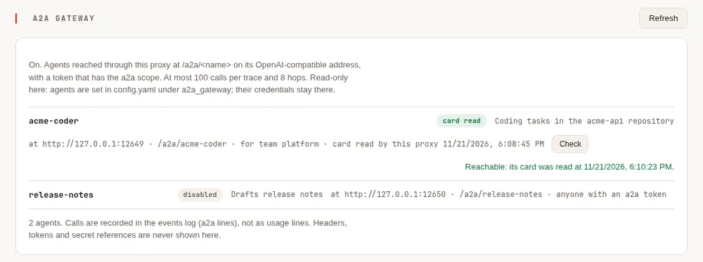
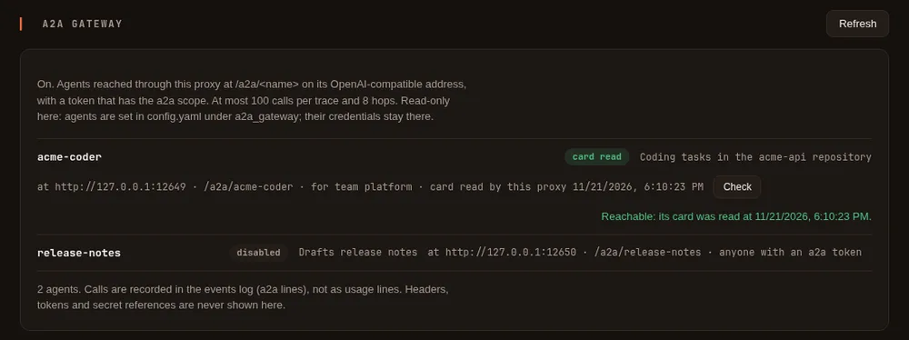

Agents & automationAgents18 min read
Agents that call agents (A2A) #
On this page
Other AI agents can hand Maple Harness a coding task and read its answer, and the proxy can put several agents behind one address with access rules, their own credentials and a record of every call, all over the Agent2Agent protocol (A2A), versions 1.0 and 0.3.
Off until you start it
Both parts are off by default. Nothing listens and nothing changes until you start maple-harness a2a serve or
add an a2a_gateway: section to the proxy's config.yaml (or turn it on in the setup page's Hubs & chaining
page, fold A2A gateway settings).
In plain words #
- What it is. A2A is a common language agents use to hand each other tasks. With it, an orchestrator or another agent can ask Maple Harness to do a coding task in one of your projects, and read the answer.
- The harness as an agent.
maple-harness a2a serveruns a session in a project folder and takes tasks from other agents. Each task is one message to that session. - It still asks first. Your permission rules and the sandbox work exactly as they do for you. When the session
would ask you before running a tool, the task pauses instead and the question goes to the calling agent. This
holds even when your config sets
permission.mode: auto: work that comes from another agent always asks (your own allow rules still apply). - The caller may say no; yes is mostly yours. A caller can deny anything. It can approve only what your allow
rules already cover, unless you granted its token more (
maple-harness a2a grant). A run outside the sandbox is always yours. An approval is never remembered: the next call asks again. A question nobody answers within 10 minutes (harness.a2a.question_timeout) is denied. See Who may approve what. - The proxy as a gateway. The proxy can list agents (the harness on another machine, or any other A2A agent) at one address, decide who may call which, keep each agent's own credentials to itself, and record every call.
- Finding an agent. Callers can search the gateway's agents by what they do ("an agent that writes tests"),
over HTTP or, with the MCP hub on, from an MCP client through its
agent_searchtool. - Who gets in. Only an access token with the a2a scope. A token for the models or for remote control does not work here, and an a2a token works nowhere else.
The harness as an agent #
Start it #
- Make a token for the caller.
maple-proxy token add orchestrator --scope a2aprints it once; give it to the agent that will send tasks. Existing tokens never gain this scope. - Start the agent in the project folder.
cdinto the project and runmaple-harness a2a serve. - Point the caller at the agent card,
http://127.0.0.1:11549/.well-known/agent-card.json. It finds the endpoint there and sends the token asAuthorization: Bearer <token>.
In one go:
maple-proxy token add orchestrator --scope a2a # shown once: give it to the calling agent
cd ~/projects/my-app
maple-harness a2a serveIt refuses to start until at least one a2a token exists, because nobody could call it. Then it prints two addresses:
| Address | |
|---|---|
| Agent card (what the agent is and how to call it; no token needed) | http://127.0.0.1:11549/.well-known/agent-card.json |
| Endpoint (JSON-RPC, needs the token) | http://127.0.0.1:11549/a2a |
The calling agent sends the token as Authorization: Bearer <token>. Stop the agent with Ctrl-C.
| Flag | What it does |
|---|---|
--listen ADDR | Where to listen. The default is 127.0.0.1:11549, this machine only |
--tls | TLS. Off on this machine, auto (a self-signed certificate) anywhere else |
--insecure-http | Allow plain HTTP off this machine. Tokens then cross the network in the clear |
--allow-host | Another name this agent may be reached at (repeatable) |
--name, --description | The agent card's words. The card is readable without a token, so keep them general |
--session NAME, --continue | Work in a named session, or carry on the folder's most recent one |
--config PATH | The config file |
What a task does #
- Tasks run one at a time, in order, as turns of the same session, so a later task sees the conversation of the earlier ones. Up to 16 tasks wait behind the running one.
- With
--continueor--session, the conversation's earlier history is shared with callers too, and the agent says so when it starts. - A task's answer is the session's reply, as text. Text and JSON parts are read; files are refused.
- A task that needs an approval moves to input-required. Its status message says which tool and what it would
do, in words and as data (
{"permission": {"requestId", "tool", "arg", "callerMayApprove"}};callerMayApprovesays whether this caller's allow would be taken, below). Answer with a message to the same task: exactly the textallow,yes,denyorno, or a data part{"approve": true}(orfalse). Anything else, "ok" included, is refused, so a sentence is never taken as consent. - When the session's model asks a question (a choice between a few options), the task also moves to
input-required. Its status message says so in words and as data (
{"question": {"requestId", "questions"}}, withsubagentwhen a subagent asks). Answer with a data part{"answers": [{"id", "selected", "other", "note"}]}(option labels inselected) or{"decline": true}to let the model decide. A sentence is not an answer, and the model is told the answer came from another program. An approval waiting in the same task comes first. - When every route is out of a provider's limit, the task stays working and waits for the reset (within
harness.limits.max_reset_wait; a longer wait fails the task with the date). Its status message says until when, in words and as data ({"limitWait": {"until"}}); a task that fails for a limit carries{"limitReset": {"at", "basis", "provider", "reason"}}. See When a provider's limit runs out. - Cancelling a task stops it, also while it waits for an answer.
- Each caller sees only its own tasks.
- Bash runs inside the sandbox by default while the agent serves, as it does while a session is shared to a phone.
Who may approve what #
In plain words. The calling agent can always say no. Saying yes is yours, except for what you have already allowed in your rules, or what you trust a caller with by granting its token.
| The question | An ordinary caller | A caller whose token you granted |
|---|---|---|
| A call your allow rules already cover (it asks only because something made it: see below) | May allow or deny | May allow or deny |
| Any other ordinary call | May deny; an allow is refused | May allow or deny |
| A command outside the sandbox; anything approved one run at a time (typing into another agent or pane, starting an agent, the local Claude, the cost confirmation) | May deny; an allow is refused | May deny; an allow is refused |
- "Already cover" is strict. A call your allow rules cover runs without asking, so a question about one exists only when something escalated it on purpose. Those stay yours: a call asked about because the proxy is not verified as yours, because its decoded arguments match an ask rule, or because it is a subagent's call is not "covered".
- A refused allow leaves the question open. The caller gets an error (
-32004) saying the call needs you, and the question waits for you or for a deny. Unanswered, it is denied. - You answer on your phone. While
a2a serveruns, and this machine's gateway is already running with a device that may drive sessions paired, the agent's session shows on the phone as one that takes approvals only. Its questions are pushed there (with the gateway's notifications on) and you can answer any of them. Watch-only devices and shared links can read, not answer. - Grants, by token id (
maple-proxy token listshows the ids). They take effect from the nexta2a serve:Shellmaple-harness a2a token add orchestrator --may-approve # makes an a2a token, shown once, and grants it maple-harness a2a grant <token id> # grant an existing a2a token maple-harness a2a ungrant <token id> # take the grant back maple-harness a2a grants # list the granted tokensThe grants are kept in
harness.a2a.may_approve(a list of token ids), which/settingsalso edits. A project's own config cannot set it. - How long a question waits.
harness.a2a.question_timeout,10mby default (1mto30m), so one caller cannot hold the only session for everyone. The wait pauses while a phone or browser has the session open. - What is recorded. A caller's deny is recorded as
answered_by: caller; a question nobody answered, astimeout(before 3.0 the record saida2a (no answer in time)). See Seeing what was refused.
One a2a serve, one shared conversation
Everyone who can call one a2a serve shares its conversation, whichever token they use: a caller could ask
what an earlier task asked and was answered. Give each caller (or each group that may see each other's work) its
own a2a serve, in its own folder and session.
The proxy as a gateway #
- List the agents under
a2a_gateway.agents(below), each with its address, a description and the header that carries its own credential, and setenabled: true. - Say who may call each one with
peopleandteams; both left out means anyone with an a2a token. - Give each caller an a2a token from the proxy:
maple-proxy token add <label> --scope a2a --person <id>. - Callers use
/a2a/<name>on the proxy's OpenAI-compatible address, and can find agents with/v1/agents?query=.
Add agents on the setup page (Hubs & chaining, fold A2A gateway settings, which needs a page password) or in
the proxy's config.yaml; the proxy picks the change up while it runs, within a few seconds:
a2a_gateway:
enabled: true
agents:
- name: coder
url: https://build-box.example:11549/a2a
description: Coding tasks in the app repository
tags: [coding, tests]
headers:
Authorization: Bearer ${secret:a2a/coder}
teams: [developers]Callers reach each agent at /a2a/<name> on the proxy's OpenAI-compatible address, for example
http://127.0.0.1:11535/a2a/coder, with an a2a token from the proxy (maple-proxy token add <label> --scope a2a,
--person <id> ties it to a person). The token is needed on this machine too.
| Setting | What it does | Default |
|---|---|---|
enabled | The gateway's switch. Off, every gateway address answers "switched off" | off |
max_ | How many calls one trace may make through the gateway, across all agents, so agents that keep calling each other stop | 100 |
max_hops | How many agents and gateways one call may pass through | 8 |
public_url | The address callers reach this proxy's OpenAI-compatible surface at, when it is not the one their requests arrive by (behind a TLS front or a load balancer, for example https://ai.example.com). The agent cards, agent search and the MCP hub's agent_search then name <public_url>/a2a/<name>. No credentials, query or fragment; plain http to another machine is allowed but logged as a warning (tokens in the clear) | the request's own address |
agents[].name | The agent's name in its address: lower-case letters, digits and dashes | |
agents[].url | The agent's endpoint (its card's url) | |
agents[] | Where its card is, if not at /.well-known/agent-card.json on the same host | |
agents[], tags | What it does, for people choosing an agent and for search | |
agents[] | Sent to the agent with every call, usually its own credential. A value may hold ${secret:NAME} or ${env:NAME}; a provider's key or another feature's credential is refused | |
agents[], teams | Who may call it (ids from people: and teams:). Both empty: anyone with an a2a token | anyone |
agents[] | This agent's switch | off |
agents[] | Allow addresses on this machine, a private network or a tailnet | off |
agents[] | Allow plain http to another machine | off |
agents[] | The longest one call (or stream) may take | 900 |
What the gateway does with each call:
- It checks the token and that its person or team may call the agent. An agent someone may not call looks the same to them as one that does not exist.
- It holds the call to the proxy's address lists and access hours for the token, its team and
their organization, as a model request is: outside them it answers
403and the call is recorded as refused. - It sends the agent's own headers, never the caller's token. A header never names a provider's key: the usual
provider variables (such as
OPENAI_API_KEY) and anything your providers'api_keysettings name are refused. - It keeps each caller to its own tasks. The agent sees every gateway caller as one (the gateway's credential), so
the gateway remembers which caller each task was made for and refuses any other task id, including one it did not
see being made (made before a restart, or not through the gateway). Conversations (
contextId) are kept the same way: a send naming acontextIdgoes through only for the caller whose earlier task made it; another caller's, and one the gateway never saw made, are refused alike ("context not found"), since an agent may take a client'scontextIdas an existing conversation, someone else's. To start a new conversation, send without one; after a proxy restart, the same. AcontextIdortaskIdthat is there but empty is refused. An agent that puts every caller in one conversation (asmaple-harness a2a servedoes) serves only the first gateway caller to use it: an answer naming another caller's task or conversation is not passed on ("context not found"; a stream ends there). Give each caller, or each group that may share a conversation, its own agent. Each caller keeps up to 10,000 conversations per agent; its own oldest are forgotten first. - It answers a task list (
ListTasks,tasks/list) itself: the caller's own tasks for that agent, the most recent 200 it made through the gateway, each read from the agent, newest first, filtered bycontextId,statusandstatusTimestampAfter, in pages ofpageSize(1 to 100, default 50) with apageTokenonly the gateway can make, for that caller and that list. Artifacts only withincludeArtifacts: true. The agent's own list, which holds every caller's tasks, is never asked for. Tasks made before a restart of the proxy, or not through the gateway, are not listed; a task the agent no longer knows is left out. When a task cannot be read (the agent fails, or answers with more than 4 MB), the list answers an error rather than a list short of it. Two lists at once per caller and 16 in all; each read counts in the call'sa2a.callevent (gets=). When the agent is another gateway, its reads share the list's trace, so that gateway'smax_calls_per_tracebounds them. - It bounds the calls in flight: 8 at once per caller and 256 in all; past that it answers 429 with
Retry-After. - It gives the call a trace id (
X-Maple-Trace-Id, kept when the caller sends one) and counts the hops (X-Maple-A2A-Hops); an agent that calls other agents should pass both on. - It passes the request and the answer through as they are, streams included, so the caller and the agent can speak either protocol version.
- It serves each agent's card at
/a2a/<name>/.well-known/agent-card.json, rewritten to name the gateway's address and the gateway's token. - It refuses push notifications and extended agent cards, which would go around it.
- It records one
a2a.callevent per call in the events log: agent, method, protocol version, person, team, trace id, outcome and time taken. Never the message or the answer.
Find an agent #
curl -H "Authorization: Bearer $A2A_TOKEN" "http://127.0.0.1:11535/v1/agents?query=writes%20tests"The answer lists the agents the caller may reach, best match first, with each one's address, card address, tags and
skills (from its card). With the built-in embedding model installed, matching is by meaning
("method": "meaning"); without it, by shared words ("method": "words"). Without query it lists them all.
limit caps the list (1 to 100, default 20).
An MCP client can search the same way: with the MCP hub on
too, the hub offers an agent_search tool that finds the agents whose people or teams name the caller (never
more than this address would find for the same person).
On the setup page #
The Hubs & chaining page has an A2A gateway card once a2a_gateway is set up. It lists each agent with its
description, who may call it (people and teams, or anyone with an a2a token), its address (scheme and host only),
where callers reach it on this proxy, and when its card was last read. Check reads an agent's card now, the
way a call would reach it, and says whether that worked; a disabled agent, or a gateway that is off, is never
reached. The card itself is read-only: agents are set in the fold A2A gateway settings below it, with a page password, or
in config.yaml. There an agent's headers are write-only: each value typed goes to the secret store, is shown only
as stored, and is asked for again when the agent's address changes. Tokens and secret references never appear on
the page. Check reaches an agent at most once every few seconds, whoever asks, and is
recorded in the audit log. Through single sign-on the card can be read without the agents' addresses, and
Check is not offered. With several replicas, "card read" is what the replica that served the page saw.
What's set up lists the gateway, and marks it as needing attention while enabled is off.


Technical details #
- Versions. The JSON-RPC binding of A2A 1.0 (
SendMessage,SendStreamingMessage,GetTask,ListTasks,CancelTask,SubscribeToTask) and 0.3 (message/send,message/stream,tasks/get,tasks/cancel,tasks/resubscribe). TheA2A-Versionheader (or query parameter) picks the version; without it the method's name does. An unknown version gets error-32009. The answer carriesA2A-Version. - The agent card. With
A2A-Version: 1.0the card is 1.0's (supportedInterfaces); with0.3, 0.3's (url,protocolVersion,preferredTransport). With no header it carries both versions' fields. Its security scheme is HTTP bearer. - Blocking. A send waits until the task finishes or needs an answer, as both versions' defaults say
(
returnImmediately: truein 1.0,blocking: falsein 0.3 answer at once). A wait longer than 10 minutes answers with the task as it is; it carries on, andGetTaskor a subscription follows it. - Streams are Server-Sent Events: the task first, then status and artifact updates, until the task finishes or needs an answer.
- Questions. An answer that does not fit the questions (a label that is not an option, two picks on a
one-answer question, a question left out) gets
-32602with the reason, and the question stays open; an answer to a question already answered, or to a task no longer waiting on one, gets-32004. The model sees the answer asanswered_by: "a2a:<caller>"withfrom_program: true. - Not offered: push notifications (
-32003), the extended agent card (see below), file parts (-32005). - Errors use the standard codes:
-32001task not found (also for another caller's task),-32002not cancelable,-32004not possible now (a finished task, a busy agent). An A2A error carries theErrorInfo1.0 asks for indata(reasonsuch asTASK_NOT_FOUND,domaina2a-protocol.org). A 0.3 streaming call that asked for an event stream gets an error as one event, as the official 0.3 SDK sends it. A request is refused (-32602) without amessageId, or with a negativehistoryLength; anidthat is not a string, a number or null is an invalid request (-32600). - Addresses. The endpoint answers at
/a2a, at/a2a/and at/(clients that join the card's address and/post to the second); the gateway's at/a2a/<name>and/a2a/<name>/. - Agent cards carry
Cache-Controlwithmax-age(five minutes; at the gateway, where the card is behind a token,private, no-cache: asked again each time), anETag(a request withIf-None-Matchnaming it gets304) andLast-Modified. - The extended agent card is not offered: 1.0's
GetExtendedAgentCardanswers-32004, as 1.0 asks of an agent whose card does not declare one; 0.3'sagent/getAuthenticatedExtendedCardanswers-32007. - Guards.
a2a servehas the same network checks as remote control: this machine only by default, TLS anywhere else, only the expectedHostnames, and no requests from web pages in a browser. Bad tokens are slowed down per address. Each call is written to the remote-control audit log, without its content. - The gateway's addresses take the same
Hostand browser checks as the rest of the OpenAI-compatible address. Its connections to agents check every address a name resolves to, and never reach cloud metadata addresses. - Several replicas (storage mode central or redis): which caller each task and conversation belongs to is
shared by every replica, so a caller's follow-up (a get, a cancel, an answer, the next message in a conversation,
the next page of a list) works on whichever replica the load balancer sends it to, and is refused to anyone
else on all of them. Those records are kept in Redis, sealed with the storage key, for 7 days from when the
task or conversation was made, at most 10,000 of each per caller and agent; a restart of the replicas does not
forget them. When Redis cannot be reached, a call that names a task or conversation is refused (
503, try again) rather than let through unchecked. Each replica counts a trace's calls on its own, so the trace budget is per replica. With one proxy (storage on disk) nothing changes: the records are its own, until it restarts.
Troubleshooting #
| You see | Why, and what to do |
|---|---|
a2a serve says no access token has the a2a scope | Make one: maple-proxy token add <label> --scope a2a |
| 401 from the agent or the gateway | The token is not an a2a token, or was revoked. A proxy or remote-control token does not work here |
| The task stays in input-required | It waits for an answer: send allow or deny to the same task id, or, for a question, a data part with answers or decline. An approval is denied, and a question skipped, after harness.a2a.question_timeout (10 minutes by default) without one; the wait pauses while a phone or browser has the session open |
An allow answers -32004, "this caller may deny, and approve only what the person's allow rules already cover" | The call is not covered by your allow rules and the caller's token has no grant, or it is a run outside the sandbox (always yours) |
| "task not found" from the gateway for a task you made | The gateway restarted since (one proxy; several replicas keep them for 7 days), or the task was made without going through it: send a new task |
"context not found" for a contextId you used | The proxy restarted since (one proxy; several replicas keep them for 7 days), or the conversation was started without the gateway: send without contextId to start a new one |
"the gateway cannot check whose task this is right now" (503) | Several replicas, and Redis cannot be reached: try again once it is back |
| A task you made is missing from a list | It was made before the proxy restarted, or not through the gateway, or is not among your 200 most recent for that agent |
The addresses in cards or search name the wrong host, or http behind your TLS front | Set a2a_gateway.public_url to the address callers use |
| "the task is not waiting on an approval any more" | Someone cancelled it, or the question was answered already |
| 404 "no such agent" from the gateway | The name is wrong, or your person or team is not in the agent's people or teams |
| 503 "switched off" | a2a_gateway.enabled is off, or the agent has disabled: true |
| 429 about a trace's budget, or 508 about passing through agents | Agents kept calling each other: the trace reached max_calls_per_trace or max_hops |
| 502 "the agent could not be reached" | The address is wrong or down, it is private without allow_private, or plain http to another machine without allow_insecure |
What has been checked #
The agent and the gateway were run against the A2A project's own conformance suites and samples (2026-11-21): its Technology Compatibility Kit for 0.3 and for 1.0 (JSON-RPC), its Python SDK's clients for both versions, and two of its sample agents behind the gateway. What the suites check passes, except:
- Checks that need an agent to act out the suite's own scenarios (answer a certain message with a file artifact, or keep a task running so it can be cancelled or continued): Maple Harness is a general agent and answers with what its session says; a finished task takes no more messages, as the specification says.
Agents and clients from other vendors have not been tested.
See also #
- Questions the agent asks you How a question reaches a calling agent, and how it answers.
- Access control Address lists and access hours, which the gateway applies too.
- MCP hub Find the gateway's agents from an MCP client.
- Background agents What happens to agents the session starts while it serves a task.